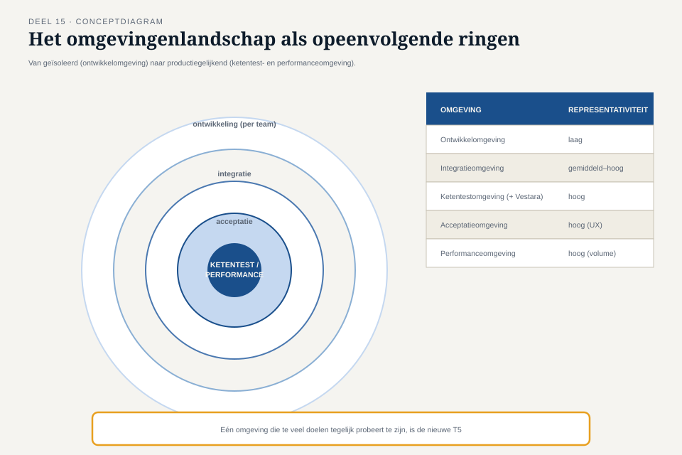

Deel 15 — Testdata en testomgevingen
Reader · Ductus-cursus Testen en Kwaliteitsborging · niveau 2 (professional) · deel 15 van 30
Dit deel beslaat twee dagdelen, conform het zwaartepunt dat het onderwerp vraagt op programmaschaal.
Leerdoelen
Na dit deel kun je:
- uitleggen waarom productiedata in een testomgeving zowel een AVG-risico als een testrisico is;
- maskeren, anonimiseren en pseudonimiseren onderscheiden en het juiste middel bij het juiste doel kiezen;
- testdata als beheerd, geversioneerd product inrichten voor een programma met meerdere teams;
- een omgevingenlandschap ontwerpen dat meerdere teams en externe ketenpartners bedient;
- servicevirtualisatie inzetten op programmaschaal, inclusief het beheer van de aannames erachter;
- de spanning tussen realistische testdata en beheersbaarheid expliciet afwegen en verantwoorden.
Studielast: twee dagdelen klassikaal, circa vijf uur zelfstudie in totaal.
DAGDEEL A
1. Waarom productiedata niet mag — en wat er dan wel moet
1.1 Het dubbele risico
Niveau 1, deel 8 introduceerde testdata als beheerd product en noemde kort de spanning tussen realisme en privacy. Op programmaschaal, met vijf teams die elk eigen testomgevingen beheren en een externe partij (Vestara) die meetest, wordt dit risico vermenigvuldigd: elke extra kopie van iets dat op productiedata lijkt, is een extra plek waar een datalek kan ontstaan.
Het tweede risico is subtieler: productiedata "toevallig" gebruiken geeft een schijnzekerheid. Een dataset van vandaag test het systeem tegen de situatie van vandaag — niet tegen de randgevallen die morgen kunnen ontstaan (de apostrofnaam die nog niet in productie voorkomt, de deeltijdcombinatie die nog niet is aangevraagd). Systematisch geconstrueerde testdata (niveau 1, deel 5 en 6) blijft daarom, ook op programmaschaal, superieur aan een kopie van de werkelijkheid.
1.2 Drie technieken, drie doeleinden
- Maskeren — waarden vervangen door plausibele, niet-herleidbare alternatieven, met behoud van formaat en statistische eigenschappen (een naam blijft een naam, een postcode blijft een geldige postcode). Geschikt wanneer realistische structuur nodig is maar individuele herleidbaarheid niet mag.
- Anonimiseren — gegevens zodanig bewerken dat heridentificatie van de betrokkene, ook in combinatie met andere bronnen, redelijkerwijs niet meer mogelijk is. Het strengste middel, met als kostenpost: soms verlies van precies de statistische eigenschappen die voor een test relevant waren.
- Pseudonimiseren — identificerende gegevens vervangen door een kunstmatige sleutel, met de mogelijkheid tot terugherleiding via een apart, beveiligd bestand. Handig wanneer een test dezelfde "persoon" moet kunnen volgen door meerdere stappen van de keten, zonder de echte identiteit bloot te leggen.

Kernzin — De vraag is niet "welke techniek is het veiligst" maar "welke techniek past bij wat deze test moet aantonen, zonder meer risico te nemen dan nodig".
↗ De informatiebeveiligings- en privacycursus behandelt de AVG-verplichtingen achter deze keuzes volledig; hier ligt de nadruk op de testinhoudelijke consequenties.
1.3 Toegepast op het Mutatieplatform
Voor de ketentest tussen portaal en kernadministratie is pseudonimisering het meest geschikt: dezelfde (kunstmatige) deelnemer moet door alle vijf bronkanalen te volgen zijn om end-to-end gedrag te controleren, zonder dat een echte deelnemer wordt blootgesteld. Voor een geïsoleerde performancetest van het portaal (deel 19) volstaat gemaskeerde of zelfs volledig synthetische data, omdat herleidbaarheid van een individuele "persoon" door de keten daar niet nodig is.
2. Testdata als geversioneerd product op programmaschaal
2.1 Het probleem van vijf teams met vijf eigen datasets
Zonder coördinatie ontstaan vijf incompatibele testdatasets: het portaalteam gebruikt deelnemer "12345" met andere kenmerken dan het kernintegratieteam onder hetzelfde nummer verwacht. Een ketentest wordt dan onmogelijk zonder eerst de datasets handmatig te synchroniseren — een verborgen kostenpost die nooit in een planning verschijnt totdat hij zich voordoet.
2.2 Eén bronset, meerdere afgeleiden
De oplossing: één beheerde, gedeelde basisset (met de systematische variatie uit niveau 1, deel 5 en 6 — randgevallen, apostrofnamen, dubbele dienstverbanden), met versiebeheer zoals bij code. Elk team gebruikt dezelfde bronset als uitgangspunt, eventueel aangevuld met teamspecifieke scenario's die apart, herkenbaar gemarkeerd worden toegevoegd.

2.3 Eigenaarschap
Consistent met niveau 1, deel 8, §3.3: testdata verdient een eigenaar. Op programmaschaal is dat niet langer één persoon (zoals Iris voor WGP 2.0 kon zijn) maar een rol die namens het hele programma wordt vervuld — een testdatabeheerder die de bronset beheert, wijzigingen coördineert en versies vastlegt.
DAGDEEL B
3. Het omgevingenlandschap
3.1 Meer dan één testomgeving
Niveau 1, deel 8 sprak over "de" testomgeving. Op programmaschaal ontstaat een omgevingenlandschap: meerdere omgevingen met elk een eigen doel.
| Omgeving | Doel | Representativiteitseis |
|---|---|---|
| Ontwikkelomgeving (per team) | snel, geïsoleerd itereren | laag — mag afwijken van productie |
| Integratieomgeving | teams samen laten testen tegen elkaars koppelvlakken | gemiddeld tot hoog, afhankelijk van het koppelvlak |
| Ketentestomgeving | volledige end-to-end keten, inclusief Vestara | hoog — moet processen (batch, timing) representatief draaien |
| Acceptatieomgeving | businessvalidatie door representanten zoals Nadia | hoog qua gebruikerservaring, gematigd qua volume |
| Performanceomgeving | belasting simuleren | hoog qua volume en infrastructuurconfiguratie, laag qua individuele datavariatie |

3.2 De valkuil van "we delen gewoon één omgeving"
Bij tijdsdruk is de verleiding groot om meerdere doelen in één omgeving te proppen. Het gevolg: een team dat performance test terwijl een ander team net een ketentest draait, verstoort elkaars metingen zonder dat iemand het meteen doorheeft — een nieuwe, subtielere versie van T5 (niveau 1): niet een te kleine omgeving, maar een omgeving die te veel tegelijk probeert te zijn.
3.3 De ketentestomgeving met Vestara
De ketentestomgeving verdient bijzondere aandacht omdat zij een externe partij bevat die niet onder programmabeheer valt. Twee terugkerende risico's:
- Beschikbaarheid: Vestara's testomgeving is niet altijd beschikbaar wanneer het programma dat nodig heeft — hier komt servicevirtualisatie (§4) in beeld, niet als vervanging maar als aanvulling.
- Synchronisatie: een wijziging in het koppelvlak die één kant doorvoert zonder de ander te informeren, herhaalt exact de fout uit T7 (niveau 1): beide kanten testen, het midden niet.
4. Servicevirtualisatie op programmaschaal
4.1 Waarom nu onmisbaar, niet optioneel
Niveau 1, deel 8 behandelde servicevirtualisatie als alternatief wanneer een ketenpartner niet beschikbaar is. Op programmaschaal, met vijf teams die allemaal tegelijk tegen de kernadministratie willen testen, is een enkele gedeelde, beperkt beschikbare Vestara-testomgeving een garantie voor wachtrijen en planningsconflicten. Servicevirtualisatie wordt hier de dagelijkse werkwijze, met periodieke, geplande sessies tegen de echte omgeving als verificatiemoment.
4.2 Het onderhoud van de aanname
Niveau 1 waarschuwde: een stub is zo goed als de aanname erachter. Op programmaschaal moet die aanname actief onderhouden worden — niet eenmalig geverifieerd. Elke wijziging die Vestara aan de kernadministratie doorvoert, moet een trigger zijn om de gevirtualiseerde service bij te werken, anders veroudert zij geruisloos — exact het patroon van T3 (niveau 1), nu toegepast op een gesimuleerde ketenpartner in plaats van een documentbestand.
Kernzin — Een gevirtualiseerde ketenpartner is een testbasis in vermomming. Zij veroudert net zo geruisloos als elke andere testbasis, en verdient dezelfde discipline om haar actueel te houden.
4.3 Contractafspraken als voorwaarde
Servicevirtualisatie werkt alleen betrouwbaar wanneer er een expliciete afspraak (een "contract") bestaat over wat de koppeling wel en niet garandeert — vergelijkbaar met contracttesten, dat in deel 16 volledig aan bod komt. Zonder zo'n contract simuleert de stub een aanname die niemand heeft bevestigd.
5. TMAP-lens
Hoe heet dit daar. Testdata en omgevingen vallen in TMAP onder infrastructuur-bouwstenen, met een sterke nadruk op gedeeld eigenaarschap door het hele team in plaats van een aparte infrastructuurfunctie die "iets levert" op verzoek.
Waar het werkelijk anders is. TMAP benadrukt dat het omgevingenlandschap zelf onderdeel is van de VOICE-evaluatie: bij elke programma-increment wordt niet alleen de teststrategiematrix (deel 12) herzien, maar ook of het omgevingenlandschap nog past bij wat er getest moet worden. Een landschap dat bij de start van het programma is ontworpen en daarna nooit is herzien, veroudert net zo zeker als elke andere testbasis.
6. Examenaansluiting
Testdata en testomgevingen komen terug in zowel CTAL-modules als in TMAP's infrastructuur-bouwsteen. Verifieer bij aanvang van een cursusgroep het actuele examenaanbod.
Kernbegrippen
maskeren · anonimiseren · pseudonimiseren · gedeelde, geversioneerde bronset · testdatabeheerder · omgevingenlandschap · ketentestomgeving · servicevirtualisatie op programmaschaal · contractafspraak als voorwaarde voor virtualisatie
Samenvatting in vijf zinnen
- Productiedata in een testomgeving is een dubbel risico: privacy én een misleidende schijn van representativiteit die morgen niet meer klopt.
- Maskeren, anonimiseren en pseudonimiseren dienen verschillende doelen — de keuze volgt uit wat de test moet aantonen, niet uit "wat het veiligst is".
- Vijf teams met vijf incompatibele testdatasets maken een ketentest onmogelijk; een gedeelde, geversioneerde bronset met teamspecifieke aanvullingen voorkomt dat.
- Een omgevingenlandschap kent meerdere omgevingen met elk een eigen representativiteitseis, en het samenvoegen van doelen in één omgeving verstoort metingen zonder dat iemand het meteen merkt.
- Servicevirtualisatie is op programmaschaal de dagelijkse werkwijze, maar de aanname erachter verdient actief onderhoud — anders veroudert een gevirtualiseerde ketenpartner net zo geruisloos als elke testbasis.